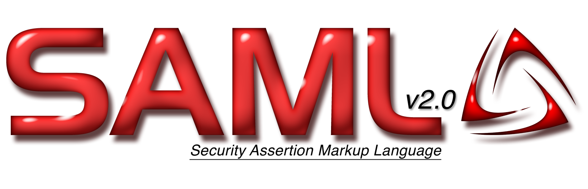
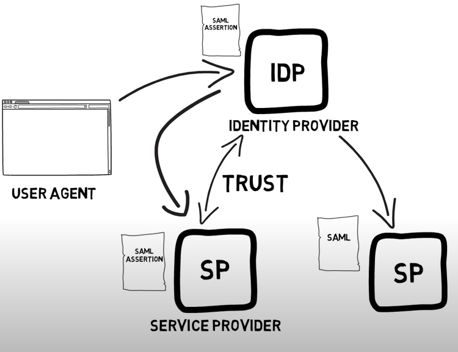
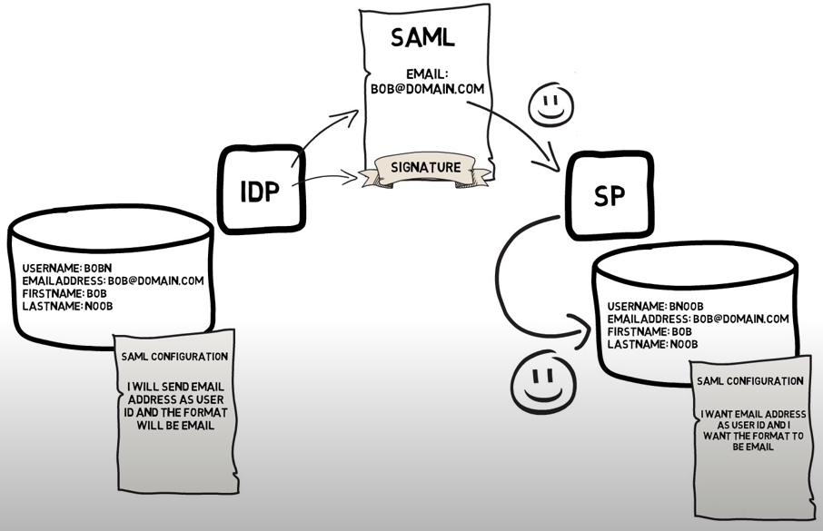
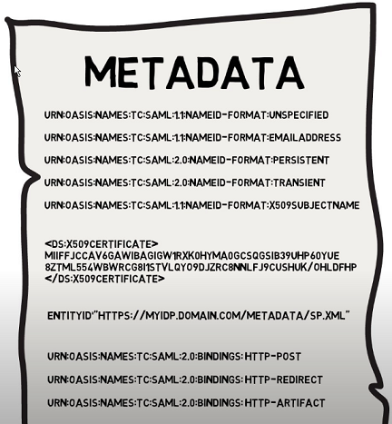
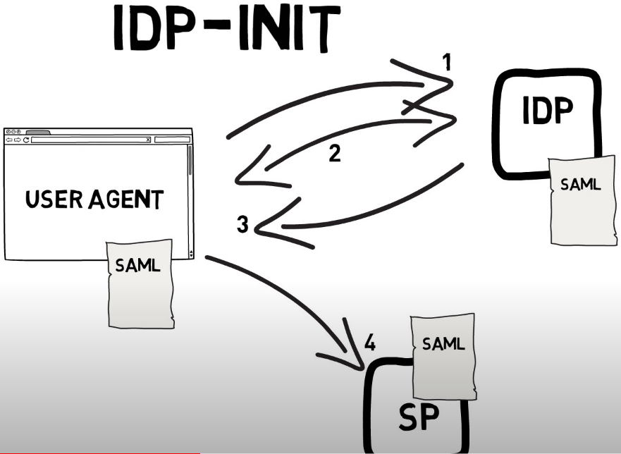
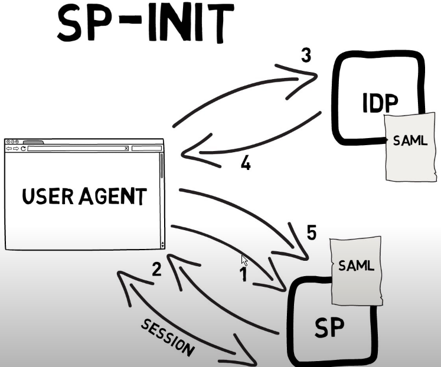
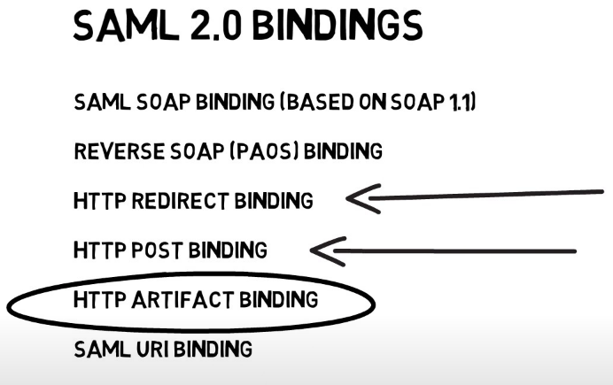
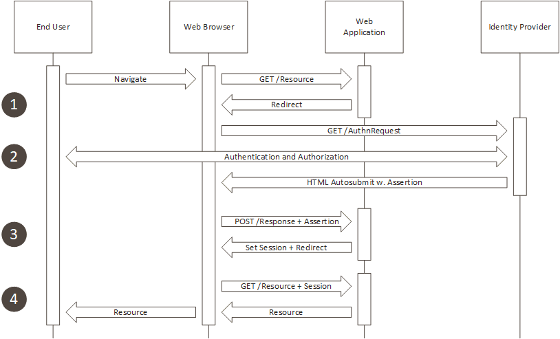
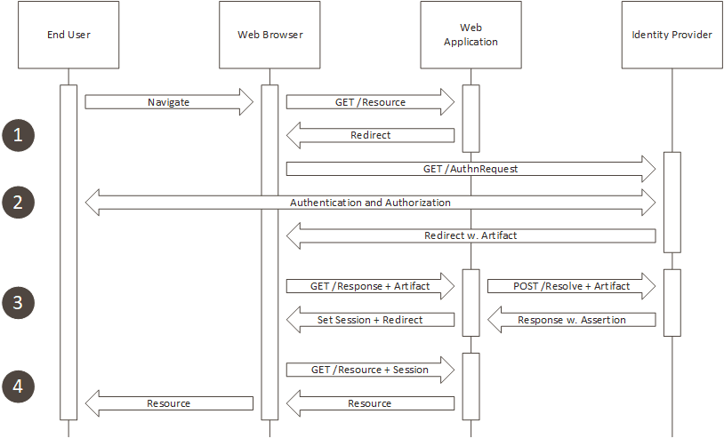
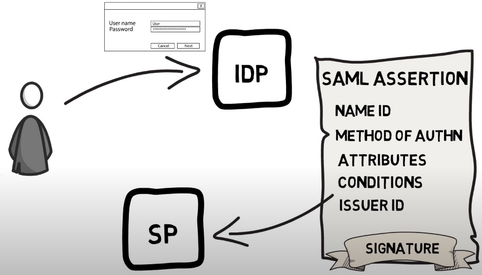

Overview
- Open standard
- Support
- Authentication
- Authorization
- XML-based markup language for security assertions
History
- 2002 - v1.0: released by OASIS Security Services Technical Committee (SSTC)
- 2005 - v2.0: v1.0 + Liberty Alliance extensions
- 2008: Extended usage in corporates
Protocols
| Flow | Description |
|---|---|
| OAuth 2.0 | Web Authorization Protocol |
| OpenID Connect 1.0 (OIDC) | Simple identity layer on top of OAuth 2.0 |
| SAML 2.0 | Security Assertion Markup Language |
Actors and Roles
| Role | OIDC | SAML |
|---|---|---|
| End User | End User | End User |
| Application | Relying Party (RP) + Resource Server (RS) | Service Provider (SP) |
| Identity Provider | OpenID Provider (OP) | Identity Provider (IDP) |
| Web Browser | User-Agent | User Agent |
Tokens
| Token | Format | API protection UC | Validation |
|---|---|---|---|
| Access Token | Not defined, often JWT | REST & Bearer | OAuth Introspection |
| ID Token | JWT | REST & Bearer | JSON Web Signature |
| SAML Assertion | XML | SOAP & WS Security | XML Signature |
Flows



Initialization


SAML 2.0 BINDINGS

REDIRECT BINDING
- SAML protocol messages can be carried directly in the URL query string of an HTTP GET request
https://idp.example.org/SAML2/SSO/Redirect?SAMLRequest=fZFfa8IwFMXfBb9DyXvaJtZ1BqsURRC2
Mabbw95ivc5Am3TJrXPffmmLY3%2FA15Pzuyf33On8XJXBCaxTRmeEhTEJQBdmr%2FRbRp63K3pL5rPhYOpkVdY
ib%2FCon%2BC9AYfDQRB4WDvRvWWksVoY6ZQTWlbgBBZik9%2FfCR7GorYGTWFK8pu6DknnwKL%2FWEetlxmR8s
BHbHJDWZqOKGdsRJM0kfQAjCUJ43KX8s78ctnIz%2Blp5xpYa4dSo1fjOKGM03i8jSeCMzGevHa2%2FBK5MNo1F
dgN2JMqPLmHc0b6WTmiVbsGoTf5qv66Zq2t60x0wXZ2RKydiCJXh3CWVV1CWJgqanfl0%2Bin8xutxYOvZL18NK
UqPlvZR5el%2BVhYkAgZQdsA6fWVsZXE63W2itrTQ2cVaKV2CjSSqL1v9P%2FAXv4C
POST BINDING

ARTIFACT BINDING

| Protocol Flow | Implementation | Backend Request | PKCE |
|---|---|---|---|
| Authorization Code Flow | Required | Token Request | Yes |
| SAML HTTP POST | Required | – | – |
| Implicit Flow | Optional | – | – |
| SAML Artifact | Optional | Artifact Resolve Request | – |
–
SAML ASSERTION

<saml:Assertion
xmlns:saml="urn:oasis:names:tc:SAML:2.0:assertion"
xmlns:xs="http://www.w3.org/2001/XMLSchema"
ID="_d71a3a8e9fcc45c9e9d248ef7049393fc8f04e5f75"
Version="2.0"
IssueInstant="2004-12-05T09:22:05Z">
<saml:Issuer>https://idp.example.org/SAML2</saml:Issuer>
<ds:Signature
xmlns:ds="http://www.w3.org/2000/09/xmldsig#">...</ds:Signature>
<saml:Subject>
<saml:NameID
Format="urn:oasis:names:tc:SAML:2.0:nameid-format:transient">
3f7b3dcf-1674-4ecd-92c8-1544f346baf8
</saml:NameID>
<saml:SubjectConfirmation
Method="urn:oasis:names:tc:SAML:2.0:cm:bearer">
<saml:SubjectConfirmationData
InResponseTo="aaf23196-1773-2113-474a-fe114412ab72"
Recipient="https://sp.example.com/SAML2/SSO/POST"
NotOnOrAfter="2004-12-05T09:27:05Z"/>
</saml:SubjectConfirmation>
</saml:Subject>
<saml:Conditions
NotBefore="2004-12-05T09:17:05Z"
NotOnOrAfter="2004-12-05T09:27:05Z">
<saml:AudienceRestriction>
<saml:Audience>https://sp.example.com/SAML2</saml:Audience>
</saml:AudienceRestriction>
</saml:Conditions>
<saml:AuthnStatement
AuthnInstant="2004-12-05T09:22:00Z"
SessionIndex="b07b804c-7c29-ea16-7300-4f3d6f7928ac">
<saml:AuthnContext>
<saml:AuthnContextClassRef>
urn:oasis:names:tc:SAML:2.0:ac:classes:PasswordProtectedTransport
</saml:AuthnContextClassRef>
</saml:AuthnContext>
</saml:AuthnStatement>
<saml:AttributeStatement>
<saml:Attribute
xmlns:x500="urn:oasis:names:tc:SAML:2.0:profiles:attribute:X500"
x500:Encoding="LDAP"
NameFormat="urn:oasis:names:tc:SAML:2.0:attrname-format:uri"
Name="urn:oid:1.3.6.1.4.1.5923.1.1.1.1"
FriendlyName="eduPersonAffiliation">
<saml:AttributeValue
xsi:type="xs:string">member</saml:AttributeValue>
<saml:AttributeValue
xsi:type="xs:string">staff</saml:AttributeValue>
</saml:Attribute>
</saml:AttributeStatement>
</saml:Assertion>
Limitations
-
Mobile application
-
Devices and other “browser-less” use cases
-
XML format


References